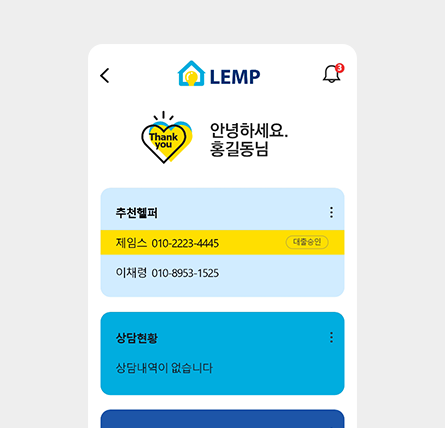
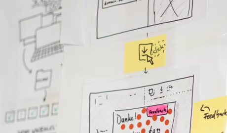

One Kitchen Multibrand
청년부엌은 IT회사입니다.
기존공유주방 vs 청년부엌
- 기존공유주방
- 기존 공유주방 수익 모델은 초기 창업컨설팅과 임대 수익 위주인 공유오피스와 크게 다르지 않음

- 청년부엌
-
하나의 주방에서 여러 브랜드를 운영하는
‘One kitchen X Multi Brand’
자체 브랜드 + 로컬 맛집 운영플랫폼 공유

Tech와 F&B의 만남
- IT 전문가
- 청년부엌은 우아한형제들이 인수한 국내 배달POS No.1 기업 Foodtech 출신
- 외식 전문가
- 아웃백, 스쿨푸드 등 외식 프랜차이즈에서 10년 이상 근무한 베테랑

- 수집 데이터 기반 매출/손익/ 마케팅 지원 운영 시스템(CSC) 제공
-
배달 주문 앱의 메뉴등록 및 관리, 영업실적 관리 등을
편리하게 할 수 있는 시스템 제공
다양한 경로의 매출/입금을 한번에 정산하여 보여주는 통합정산 기능 제공
권역별 데이터에 근거해 상권을 분석하고 이를 통해 성공 가능성을 높임

- 임대업이 아닌 IT 개발 방법론 적용
-
시장의 반응을 보면서 진화/확장/폐기를 선택하여
성공 확률을 높임
각 지역 공유 주방에 배정된 브랜드의 고객 반응을 빠르게 테스트, 고객 선호 위주의 브랜드로 최적화
작은 실패를 허용하여 큰 성공을 이룰 수 있는 애자일한 브랜드 관리 전략
Brand Story
펭귄들은 먹이를 찾아 바다로 뛰어야 할 때 쉽사리 몸을 던지지 못합니다.
시퍼런 바닷물 속에는 범고래도, 바다표범도 있습니다.
이때 위험을 무릅쓰고 가장 먼저 뛰어드는 펭귄이 있습니다.
우리는 이 펭귄을 ‘퍼스트 펭귄’이라고 부릅니다.
공동체를 위해 빠른 판단력과 행동으로 위험을 무릅쓰고 바다에 뛰어드는 펭귄!
청년부엌은 공동체를 위한 도전과 상생을 회사의 가치로 생각합니다.
퍼스트 펭귄은 그 상징입니다.
시퍼런 바닷물 속에는 범고래도, 바다표범도 있습니다.
이때 위험을 무릅쓰고 가장 먼저 뛰어드는 펭귄이 있습니다.
우리는 이 펭귄을 ‘퍼스트 펭귄’이라고 부릅니다.
공동체를 위해 빠른 판단력과 행동으로 위험을 무릅쓰고 바다에 뛰어드는 펭귄!
청년부엌은 공동체를 위한 도전과 상생을 회사의 가치로 생각합니다.
퍼스트 펭귄은 그 상징입니다.
History
- 2018.12 ㈜청년부엌 설립
- 2019.06 1’st 브랜드 ‘경성밥상’ 런칭
- 2019.10 강남 1호점(역삼동) open
- 2019.11 장부대장 콜라보 시작
- 2020.02 매출 5천 돌파
- 2020.07 최고 매출 경신
- 2020.09 경성 밥상 2호점 예정
- 2020.10 경성 밥상 3호점 예정
- 2021 수도권 20개 매장 확대
- 2022 수도권 200개 매장 확대
-
뉴트로 한식 - 경성밥상
대표메뉴 : 경성국수(고기국수), 팔도비빔밥 -
뉴트로 한식 - 경성밥상
대표메뉴 : 경성국수(고기국수), 팔도비빔밥 -
장부대장
배달/외식데이터분석,2019.11~장부대장과 콜라보 -
경성밥상
2020 9월 2호점
Our Brand
- 청년 부엌의 첫번째 펭귄 : 경성 밥상
- 뉴트로 컨셉의 한식 배달 전문 브랜드 2020 여름 매주 최고 매출 경신 중
영업4개월만에
월매출5천만원돌파!


경성밥상 in Media
- 생생경제정보톡톡 2019.11

- 월간 외식경영 2020. 06


Partnership
배달음식업 점주님들의 성공을 위해 혁신적인 파트너들의 창의적인 제휴/제안을 기대합니다.
- 1.메일을 통한 제휴문의
- 2.담당자 검토 및 연락
- 3.제휴조건 협의
- 4.제휴 또는 계약체결